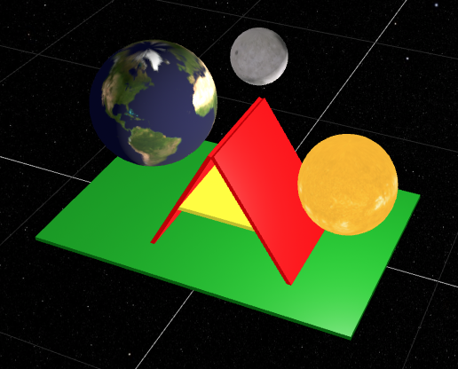

Apresentação

As tecnologias de realidade virtual (RV) têm experimentado avanços notáveis tanto em hardware (headsets) quanto em software (plataformas de desenvolvimento). Dispositivos como o Meta Quest, com processamento, rastreamento e baterias integrados, proporcionam experiências imersivas e portáteis. Paralelamente, plataformas de desenvolvimento como Unity, Unreal Engine e A-Frame oferecem ferramentas poderosas para criar aplicações de RV cada vez mais sofisticadas. Apesar desse progresso, o potencial da RV para o ensino ainda é pouco explorado, especialmente em áreas como a astronomia, que se beneficiariam enormemente de sua capacidade de representar conceitos complexos em um ambiente tridimensional interativo.
A realidade virtual oferece grande potencial para o ensino de ciências, Física e Astronomia. Ao permitir visualizações de objetos celestes, simulação de fenômenos astronômicos básicos como eclipses e estações do ano e a interação direta com o ambiente virtual, a RV proporciona experiências de aprendizagem imersivas e envolventes que podem aumentar a compreensão, a motivação e o engajamento dos alunos. A possibilidade de visualizar e manipular objetos 3D virtuais com as próprias mãos, em contraste com representações bidimensionais tradicionais, facilita a compreensão de conceitos abstratos e a construção de modelos mentais mais precisos.
Este minicurso visa introduzir os participantes ao desenvolvimento de aplicações de RV para o ensino de astronomia utilizando a plataforma A-Frame, com base na linguagem HTML/Javascript. Ao final do curso, os participantes construirão um sistema solar virtual simplificado, com o Sol, a Terra e a Lua, incluindo movimento orbital e de rotação. O curso aborda os conceitos básicos de modelagem 3D, animação, iluminação e interação no ambiente A-Frame. Devido ao tempo limitado, o curso não explora programação avançada em Javascript, a criação de componentes personalizados nem a integração com a biblioteca Three.js, tópicos que podem ser aprofundados em estudos posteriores.
Vantagens das Aplicações Web em Realidade Virtual
O desenvolvimento de aplicações de Realidade Virtual (RV) em páginas e aplicativos web, utilizando tecnologias como HTML5, Javascript e CSS, oferece uma série de vantagens significativas em termos de flexibilidade, alcance e potencial. A natureza aberta e universal da web permite que aplicações desenvolvidas nessas linguagens sejam acessadas em uma ampla gama de dispositivos, desde computadores desktop e notebooks até smartphones, tablets e headsets de RV, sem a necessidade de compilações específicas para cada plataforma.
Além da portabilidade, a web oferece uma infraestrutura robusta para o desenvolvimento e distribuição de aplicações, com ferramentas de desenvolvimento acessíveis, bibliotecas gráficas poderosas como o Three.js e frameworks como o A-Frame que simplificam o processo de criação de experiências imersivas. A vasta comunidade de desenvolvedores web também contribui para a disponibilidade de recursos, tutoriais e exemplos de código, facilitando a aprendizagem e o desenvolvimento de aplicações.
Outra vantagem não menos importante é a dispensa de instalações dispendiosas que ocupam dezenas de gigabytes no disco e necessitam de instalações de diversos plugins e dependências. Basta carregar os arquivos de texto escritos em HTML/Javascript diretamente no navegador de internet para se obter resultados poderosos. Como exemplo, na plataforma A-Frame basta você incluir a seguinte declaração no seu arquivo de texto html:
<script src="https://aframe.io/releases/1.6.0/aframe.min.js"></script>para ter acesso direto e imediato (sem nenhuma instalação, pré-configuração ou pré-compilações dispendiosas e demoradas adicionais) aos recursos de todo o espectro da Realidade Estendida. Para citar apenas alguns desses recursos, destacamos:
- hand-controls: habilita o rastreamento das mãos e dispara eventos conforme movimentos específicos dos dedos
- hand-tracking-grab-controls: permite que objetos sejam agarrados com as mãos virtuais e deslocados
- laser-controls: funciona como um laser pointer virtual usado para indicar ou selecionar objetos virtuais.
- sound: permite que fontes sonoras sejam atribuídas à localização de objetos virtuais específicos e promovendo estereoscopia auditiva.
Realidade Virtual em Headsets versus Smartphones
Embora a RV em smartphones ofereça acessibilidade e conveniência, os headsets de RV proporcionam experiências imersivas mais completas, com maior campo de visão, rastreamento de movimento mais preciso, visão estereoscópica, e a capacidade de isolar o usuário do ambiente externo, aumentando a sensação de presença no mundo virtual.
WebXR: A API para Realidade Virtual na Web
A WebXR é uma Interface de Programação de Aplicativos (API) que permite a criação de experiências de RV e Realidade Aumentada (RA) diretamente em páginas web, acessíveis através de navegadores de internet. A WebXR fornece uma camada de abstração entre o código da aplicação e os diferentes dispositivos de RV e RA, permitindo que os desenvolvedores criem experiências imersivas sem se preocupar com as especificidades de cada hardware.
A API WebXR oferece funcionalidades para rastreamento de posição e orientação do headset e dos controladores, renderização de cenas 3D, interação com objetos virtuais e acesso a sensores do dispositivo.
Plataformas Web para Realidade Virtual com WebXR
Existem diversas plataformas e bibliotecas Javascript que utilizam a API WebXR para facilitar o desenvolvimento de aplicações de RV em páginas web. Algumas das mais populares incluem:
- Three.js: Uma biblioteca gráfica 3D completa e versátil, amplamente utilizada para a criação de jogos, animações e experiências interativas na web. O Three.js oferece uma ampla gama de funcionalidades para modelagem 3D, materiais, iluminação, animação e renderização, além de suporte à WebXR para a criação de experiências imersivas.
- Babylon.js: Outra biblioteca gráfica 3D popular, com foco na criação de jogos e experiências interativas de alto desempenho. O Babylon.js oferece uma interface amigável, um sistema de física integrado e suporte à WebXR.
- A-Frame: Um framework web para a criação de experiências de RV de forma declarativa, utilizando HTML. O A-Frame simplifica o desenvolvimento de RV, abstraindo a complexidade da biblioteca Three.js e permitindo a criação de cenas 3D com tags HTML. O A-Frame utiliza a WebXR para integrar as experiências imersivas com dispositivos compatíveis.
Principais características do A-Frame
O A-Frame adota a filosofia de simplificar o desenvolvimento de experiências de RV na web, tornando-o acessível a um público mais amplo, incluindo desenvolvedores web com pouca ou nenhuma experiência em computação gráfica 3D.
A filosofia do A-Frame se reflete em sua abordagem declarativa, que permite a criação de cenas 3D utilizando tags HTML, familiar aos desenvolvedores web. Essa abordagem abstrai a complexidade da biblioteca gráfica subjacente (Three.js), permitindo que os desenvolvedores se concentrem na estrutura e no conteúdo da experiência de RV.
O A-Frame também se baseia no conceito “Entidade-Componente-Sistema” (ECS), que promove a modularidade e reutilização de código. As entidades representam os objetos na cena 3D, os componentes definem suas propriedades e funcionalidades, e os sistemas gerenciam o comportamento global da cena. Essa estrutura modular torna o código mais organizado, legível e fácil de manter.